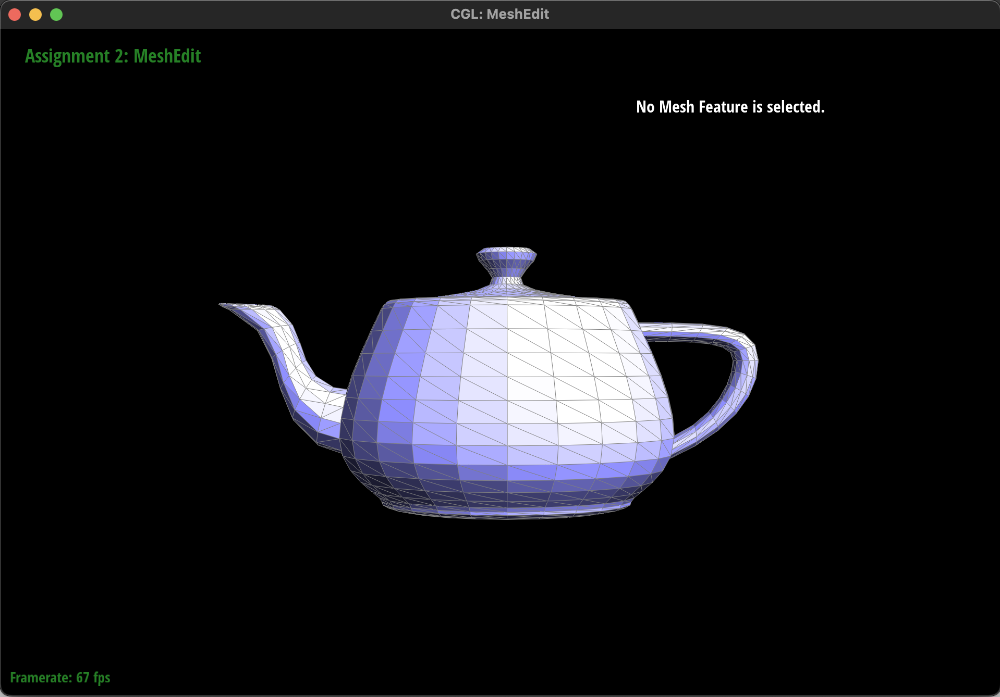
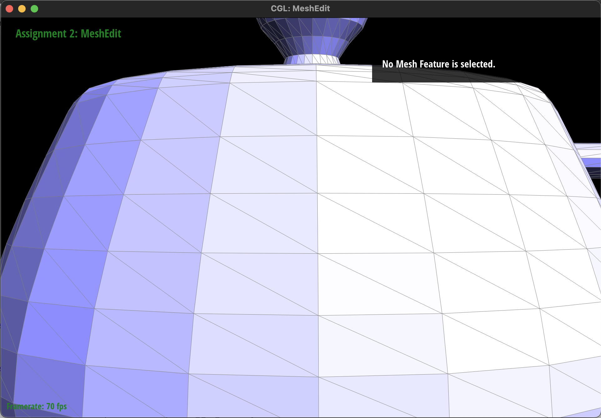
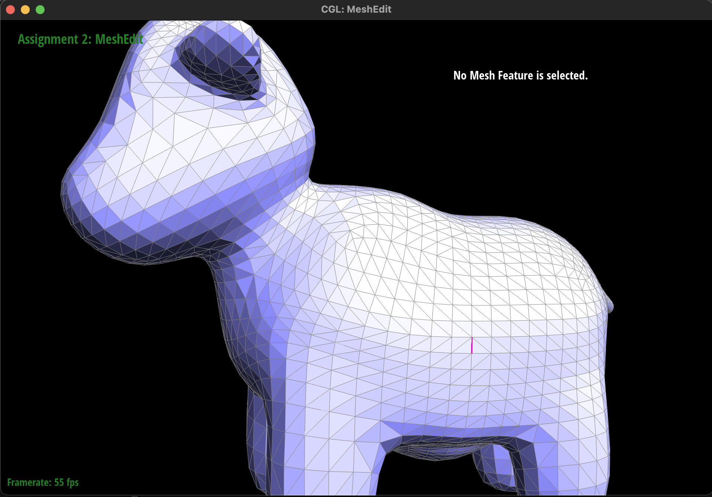
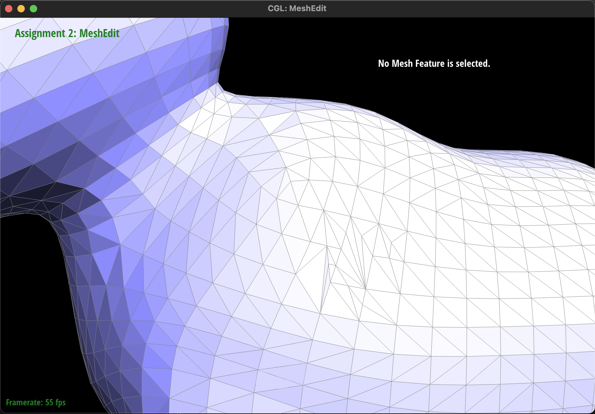
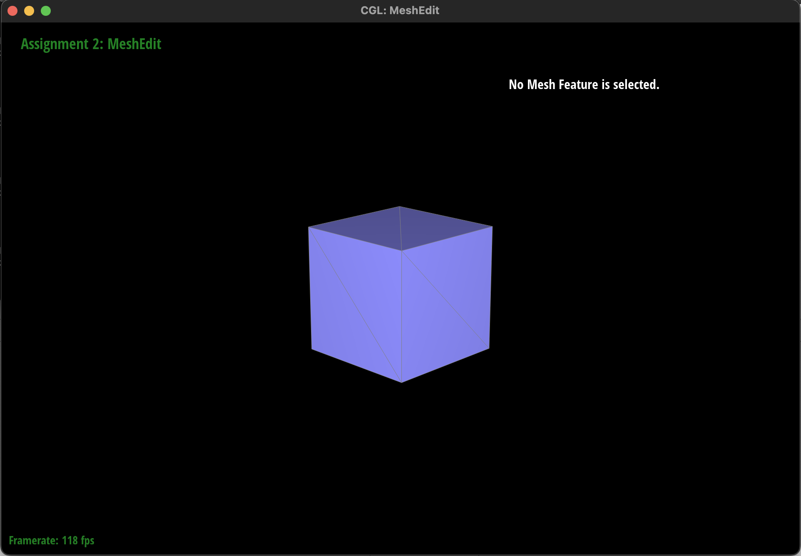
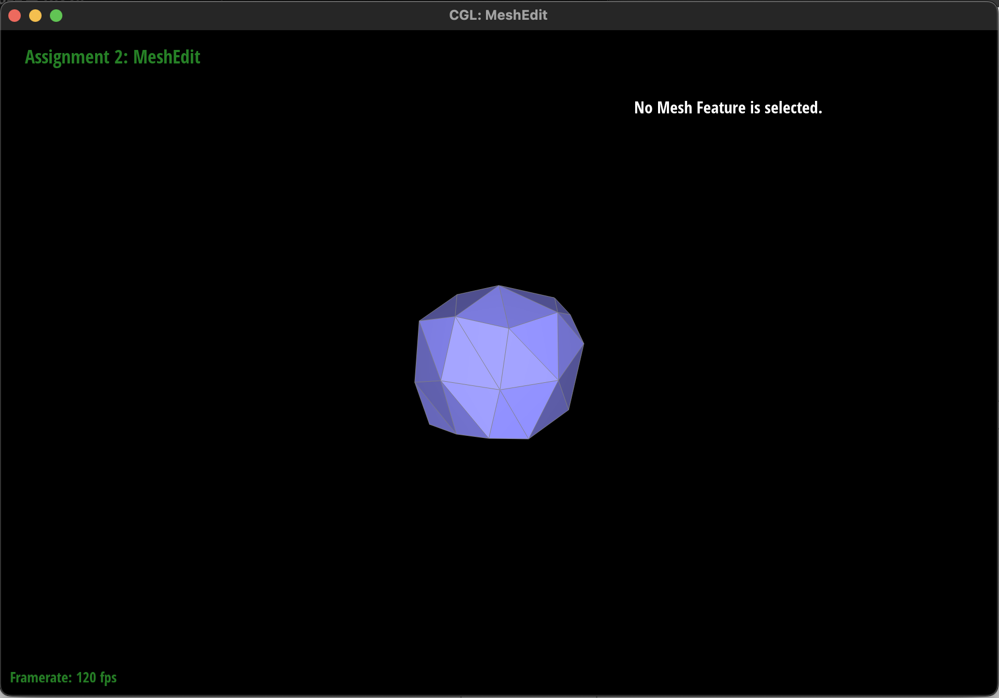
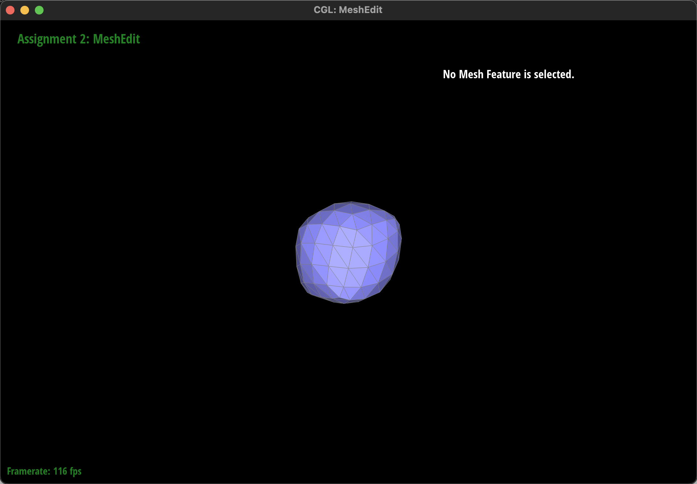
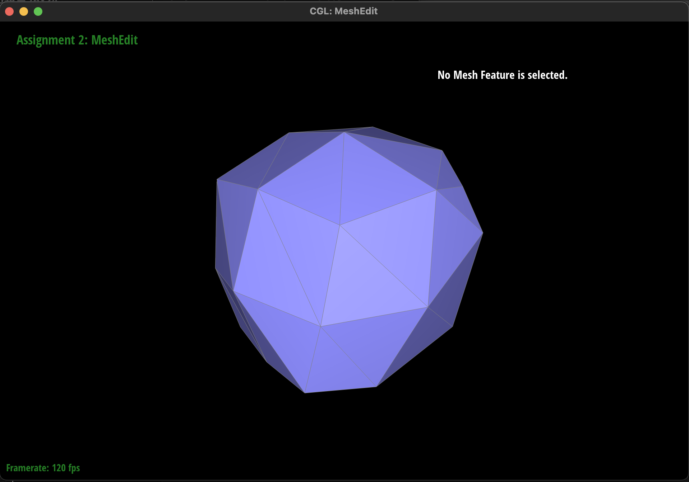
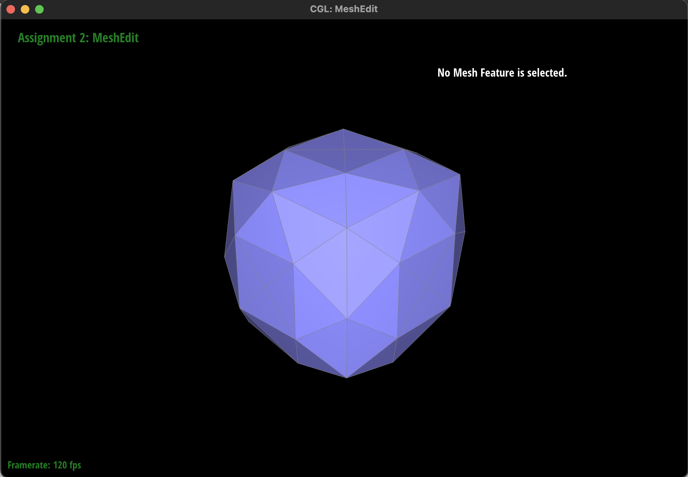

CS184/284A Spring 2025 Homework 2 Write-Up
Link to webpage: cal-cs184-student.github.io/hw-webpages-d-wwwang/
Link to GitHub repository: github.com/cal-cs184-student/hw2-meshedit-d-wwwang

Overview
In this homework I implemented geometric modeling tools across two representations: parametric curves/surfaces and triangle meshes. The first section covers Bezier curve and patch evaluation via de Casteljau's algorithm (Parts 1-2). The second section covers operations on halfedge meshes: area-weighted vertex normals for smooth shading (Part 3), edge flip and edge split as the fundamental local mesh editing operations (Parts 4-5), and loop subdivision for progressive mesh upsampling (Part 6).
The most interesting thing I learned is how effective pre-processing edges is in creating asymmetric or symmetric cubes during loop subdivision. I had never thought of how something as simple as splitting edges can lead to significantly different results visually, all based on math!
Section I: Bezier Curves and Surfaces
De Casteljau's algorithm evaluates a Bezier curve at parameter \( t \in [0, 1] \) by repeatedly linearly interpolating between consecutive control points until a single point remains. Given \( n \) control points \( \mathbf{p}_0, \ldots, \mathbf{p}_{n-1} \), one step produces \( n-1 \) intermediate points: \[ \mathbf{p}_i' = (1-t)\,\mathbf{p}_i + t\,\mathbf{p}_{i+1}, \quad i = 0, \ldots, n-2 \] We can repeat this step until one point remains, or the point on the curve at parameter \( t \).
I implemented this in BezierCurve::evaluateStep by iterating over consecutive pairs of the input points, lerping each pair with the class member t, and returning the vector of \( n-1 \) points.
The images below show the de Casteljau subdivision steps for a Bezier curve with 6 control points as well as the curve and a screenshot with different \( t \) values.

|

|

|

|

|

|

|

|

|

|
Part 2: Bezier surfaces with separable 1D de Casteljau
A Bezier patch is defined by an \( n \times n \) grid of 3D control points. To evaluate the surface at parameters \( (u, v) \), I used the following approach:
- For each row of control points, run the full 1D de Casteljau algorithm with parameter \( u \) to collapse each row to a single 3D point.
- Treat the resulting \( n \) column points as a new 1D curve and run de Casteljau with parameter \( v \) to get the final surface point.
This is implemented via three functions:
evaluateStep(points, t): one lerp reduction step in 3D with \( t \) as a parameter.evaluate1D(points, t): repeatedly appliesevaluateStepuntil a single point remains.evaluate(u, v): appliesevaluate1Dwith \( u \) to each row, collects the results, and finally appliesevaluate1Dwith \( v \).
The image below shows the teapot rendered from Bezier patches using separable de Casteljau evaluation.

Part 3: Area-weighted vertex normals
To compute an area-weighted vertex normal, I walk around all incident faces using a do-while loop with the pattern h = h->twin()->next(). For each non-boundary face, I compute cross(p1 - p0, p2 - p0) where p0 is this vertex and p1, p2 are the next two vertices around the face. The magnitude of this cross product equals twice the triangle's area, so accumulating these vectors and calling .unit() automatically produces an area-weighted average. The function must use HalfedgeCIter (const iterators) since normal() is a const method.
The images below show the teapot with flat shading (left) and Phong shading (right).
|
|
 |
Part 4: Edge flip
I implemented the edge flip by reconnecting the shared edge between two triangles to connect the opposite pair of vertices instead. My implementation uses a systematic pointer-reassignment approach: label every element first (6 halfedges h0-h5, 4 vertices va-vd, 2 faces f0-f1, edge e0), then call setNeighbors on every halfedge, even those whose values don't change. This exhaustive approach prevents bugs from forgetting a single pointer. I return early if the edge is on a boundary and create no new elements.
The images below show the teapot before and after edge flips.

|
|
Part 5: Edge split
I implemented the edge split by inserting a midpoint vertex m on the shared edge and connecting it to the two opposite vertices, turning 2 triangles into 4. This requires creating 1 new vertex (vm at midpoint), 3 new edges (e5 for m-c, e6 for a-m, e7 for m-d), 2 new faces (f2, f3), and 6 new halfedges. I again label all 12 halfedges (6 existing, 6 new) and call setNeighbors on each.
The isNew flags are important for Part 6, e0 and e5 (the two halves of the original split edge) get isNew = false; e6 and e7 (the new crossing edges) get isNew = true; vm gets isNew = true.
The images below show the teapot before and after edge splits.
|
 |
|
|
 |
 |
Part 6: Loop subdivision for mesh upsampling
Loop subdivision increases mesh resolution while smoothing the surface. I implemented this with the following steps:
- Old vertex positions: For each original vertex with degree \( n \), compute \( (1 - nu) \cdot \mathbf{p} + u \cdot \sum_{\text{neighbors}} \mathbf{q} \), where \( u = 3/16 \) if \( n = 3 \), else \( u = 3/(8n) \). Set this in
newPosition, setisNew = false. - Edge midpoint positions: For each original edge with endpoints A, B and opposite vertices C, D, compute \( \frac{3}{8}(A+B) + \frac{1}{8}(C+D) \). Set this in
e->newPosition. - Split all original edges: Snapshot original edges into a vector first to avoid splitting newly created edges. Copy
e->newPositiontovm->newPositionafter each split. - Flip new crossing edges: Flip every edge with
isNew == truewhose two endpoints have differentisNewstatus (one old, one new). - Copy positions: For all vertices, set
position = newPosition.
Sharp corners get smoothed because the loop weights allow each vertex to move towards its neighbors' average. The cube subdivides asymmetrically because each face has a single diagonal, making the triangulation asymmetric. Pre-splitting each face's diagonal by creating an X pattern makes the mesh symmetric before subdivision, producing a symmetric result.
The images below show the cube being subdivided multiple times as well as the cube being subdivided with and without pre-processing.
|
 |
 |
|
 |
|
|
 |
 |